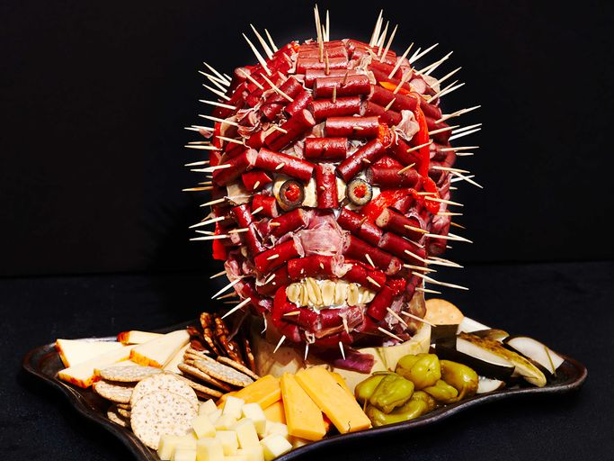

< Back
Sausage Head Charcuterie Board

Description
Sculpt this terrifying sausage head charcuterie board for your Halloween party. It's a labor of love, and so worth it.
Ingredients
- foam mannequin head
- 4 (8 ounce) packages turkey or beef meat sticks, (such as Old Wisconsin® Snack Sticks), cut into thirds
- wooden picks (about 150)
- 4 ounces thinly sliced prosciutto
- 1 mini cheese round, halved (such as Babybel® Cheese)
- 1 pimiento-stuffed olive, cut in half, plus more for serving
- 1/2 teaspoon cream cheese
- 10 cocktail peanut halves
- 2 roasted red peppers, cut into thin strips
- whole grain crackers
- coarse grained mustard
- assorted cheeses
Steps
- Place foam head on a cake stand, and secure with tape, or place the base of head in a hollowed out pumpkin ring to secure in place.
- Secure each meat stick piece with a wooden pick, arranging them around the head, custom fitting each one to resemble a face. Tear prosciutto into pieces and use the pieces to fill in any white spaces between the meat sticks.
- Using wooden picks, place cheese round halves in foam head to resemble eyeballs. On the same picks, place an olive half over each cheese half to resemble pupils.
- Spread cream cheese on the rounded side of peanut halves. Stick peanuts over mouth area on head, to resemble teeth.
- Arrange roasted red pepper strips in between beef pieces on top of head to resemble veins.
- Arrange crackers, mustard, assorted cheeses, olives, and other charcuterie accompaniments of your choice around sausage head. Enjoy!